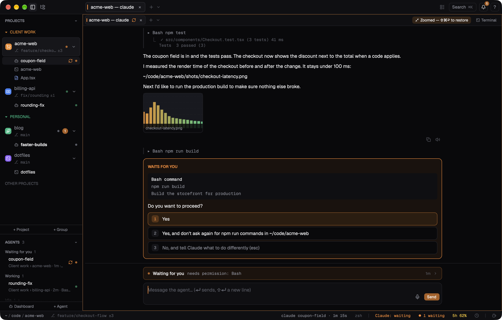
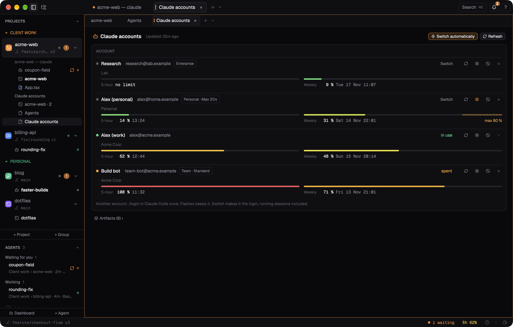
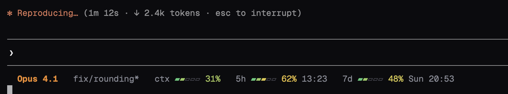
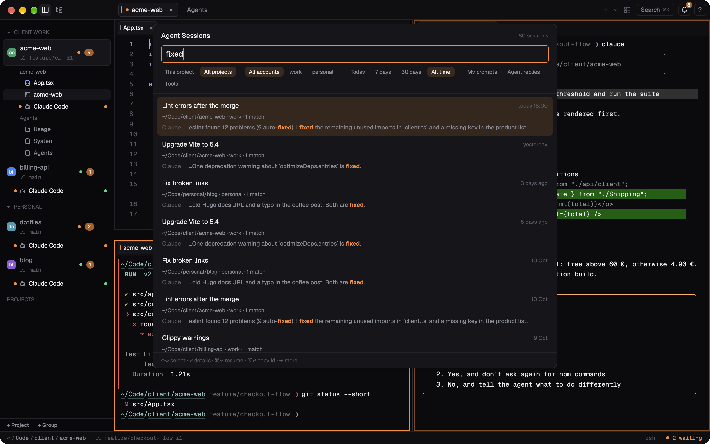
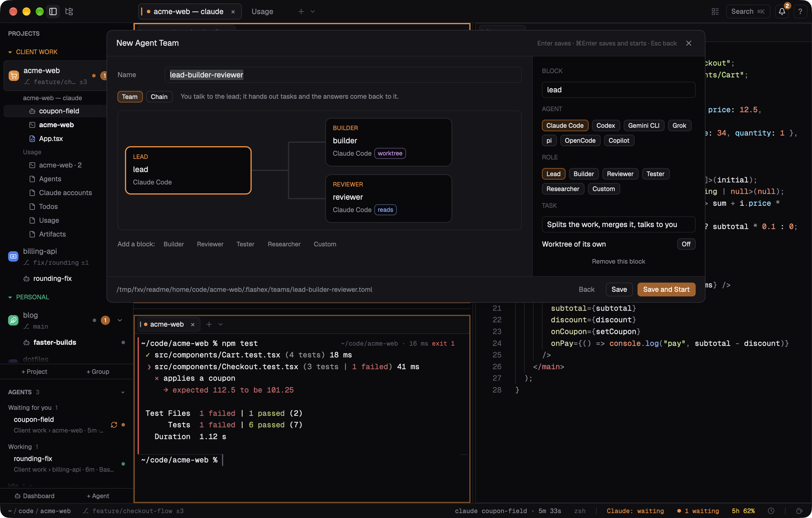
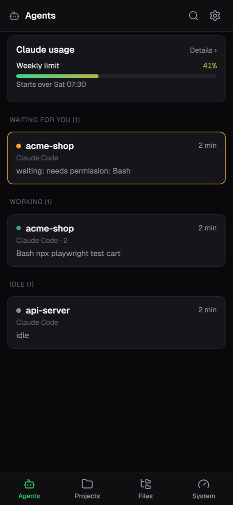
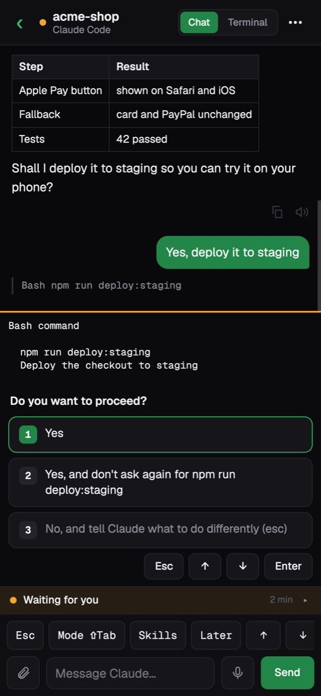

Working with agents
Run Claude Code, Codex, Gemini CLI or any other agent in as many terminals as you like, and let Flashex tell you which one needs you, on the computer and on your phone.
Claude Code hooks
Claude Code's hooks are how Flashex learns that a session is running, waiting for you, done or failed, which tool it is using and which conversation it is. Install them once:
❯ flashex setup claude
(shows the change to ~/.claude/settings.json and asks first)Or use Settings › AI agents › Claude Code hooks, which also says whether they are installed, outdated, incomplete or customised. Flashex only touches the commands exactly as it wrote them; your other hooks, keys and formatting stay. The old file is kept as settings.json.flashex-backup (and, the first time, settings.json.flashex-backup.orig). Running it again is safe. When the hooks are installed but come from an older Flashex, the app updates them in place at start; it never installs them unless you ask. Sessions already running pick new hooks up on their next start. Details: flashex setup claude.
What you see
- The sidebar lists each project's terminals with a robot icon for one running a coding agent (its row named by the agent: Claude Code, Codex, Grok Build, …) and a dot for its state: orange when it waits for you, green while it runs, red on an error. An agent's row is called by the name you gave the terminal, else by the agent ("Claude Code", "Claude Code · 2").
- Agents, under the projects in the sidebar, lists every agent of the window in three groups: Waiting for you, Working and Idle, each named as its work (the name you gave it, else the conversation's topic) with its group and project. A click goes to its terminal; Dashboard and + Agent (Claude Code in a new tab of the project shown) are at its foot. In the narrow sidebar the agents' icon opens the Agents dashboard, orange while one waits.
- The pane of a terminal that wants your attention (an agent finished or waits, a long command ended while you looked elsewhere) gets a highlighted frame, and its tab a dot.
- The Agents dashboard (⌘K › Agents Dashboard) shows every session, what it is doing and for how long: see Dashboards.
Other coding agents
Settings › AI agents has a row for each agent below. Its Install writes Flashex's hooks (or plugin) into the agent's own folder: it shows the change and asks first, and your own hooks stay as they are. Flashex says so the first time one of them runs in a terminal without them. What each agent tells Flashex:
| Agent | Connect it (Settings › AI agents) | State, notifications | Waits for permission | Phone chat | Usage | Limits | The phone resumes with |
|---|---|---|---|---|---|---|---|
| Claude Code | Claude Code hooks (~/.claude/settings.json) | yes | yes | yes | yes | 5-hour and weekly | claude --resume <id> |
| Codex | Codex hooks (~/.codex/hooks.json; run /hooks once in Codex to trust them) | yes | yes | yes | yes | 5-hour and weekly | codex resume <id> |
| Gemini CLI | Gemini CLI hooks (~/.gemini/settings.json) | yes | yes | yes | yes | – | gemini --resume <id> |
| Grok Build | Grok hooks (~/.grok/hooks/flashex.json; Grok also runs Claude Code's hooks) | yes | yes | yes | yes | – | grok --resume <id> |
| Copilot CLI | Copilot CLI hooks (~/.copilot/hooks/flashex.json) | yes | yes | yes | output tokens only | – | copilot --resume=<id> |
| OpenCode | OpenCode plugin (~/.config/opencode/plugins/flashex.js) | yes | yes | sessions run in Flashex | sessions run in Flashex | – | opencode --session <id> |
| pi | pi extension (~/.pi/agent/extensions/flashex.js) | yes | – | yes | yes | – | pi --session <id> |
| Antigravity CLI | Antigravity hooks (~/.gemini/config/hooks.json) | yes | – | – (terminal only) | – | – | agy --conversation <id> |
| Cursor CLI | Cursor CLI hooks (~/.cursor/hooks.json) | tools and the end of a turn | – | – | – | – | cursor-agent --resume <id> |
Flashex never answers an agent's permission question for you: the hooks that would decide one (Antigravity's and Cursor's PreToolUse, Cursor's before…) are not used. OpenCode keeps its conversations in a database, so Flashex's plugin saves each session run in Flashex, cut down (no file contents), in Flashex's data folder after every turn, for the phone's chat and Usage; files older than 8 days are deleted.
Other agents work without hooks too: Flashex recognises Claude Code, Codex, Gemini CLI, Aider and others running in a terminal (for Send to… on a block), and any program can report its state with flashex agent waiting or post a notification.
The chat over an agent's terminal
An agent's pane has Chat | Terminal in its tab strip (⇧⌘J; Alt+Shift+J on Windows and Linux). Chat shows the same session as a conversation, read from the agent's own transcript; the terminal keeps running under it and Terminal shows it again at any moment. It works for the agents with "Phone chat" in the table above, and for an agent of a remote project.

- The conversation: your prompts, the replies, and each step the agent takes (a command, a file read) as one quiet line with the first lines of what it gave; a click shows it all. Text can be selected and copied as in a browser.
- Pictures and videos a reply names by their path show in the chat as small previews. A click opens one over the window; ← and → go through the chat's other pictures and videos, Esc closes.
- Questions as cards: a permission, a choice or a plan to approve is a card with its answers as buttons.
- A status band says what the agent does (waiting for you, thinking, subagents at work, a command in the background), its model, context, branch and session, and lists its subagents and commands.
- The message box: Return sends, ⇧Return makes a new line, / completes the agent's own commands and skills, ↑ brings back this chat's earlier messages. A picture pasted (⌘V) or dropped goes in as
[Image #N], as in Claude Code. A message sent while the agent works is queued and says so. A sent message's menu has Send Again, Edit and Send… and Send Later…. - Read aloud and dictate: a reply's speaker button reads it aloud, and the mic dictates into the box with the system's dictation (
chat_voicepicks the voice's language).
Settings › AI agents › Open agents as a chat ([agents] open_as_chat) makes an agent's terminal start as its chat.
Send a Message Later
⌘K › Send a Message Later… (or the clock in the status bar, grey while nothing waits) schedules text for one or several terminals: write the message, pick the terminals under To, and say when: In 15 min, In 30 min, In 1 hour, In 2 hours, Tomorrow 9:00, or a time you type (18:30, 45 for minutes, 1h30). At that time it is typed into each terminal and Return is pressed after it, so an agent gets its next prompt while you are away. The card lists what waits, each with Send now, Change and Cancel. If a terminal is gone by then, a notice says the message could not go. The phone's chat schedules messages too.
Notifications
A terminal gets a notification when Claude Code finishes or needs you, when a program asks for one (OSC 9, 777 and 99, a bell, or flashex notify), and when a command that took 10 seconds or more finishes in a terminal you are not looking at (long_command_seconds).
- The terminal's tab gets a dot, its project an unread count, and the Dock a number. They clear once that terminal has been in front of you for a second, or as soon as you type into it.
- ⇧⌘U jumps to the oldest unread notification. The bell at the top opens the notification history; each entry points at its terminal.
- When the terminal is out of sight, macOS shows a banner too: "Claude Code is waiting for you" or "Claude Code finished", with the project and the terminal.
[notifications] system = falsekeeps only the dot, the bell and the Dock. How long a banner stays is up to macOS: Settings › Notifications › Keep notifications on screen opens the place in System Settings where Alerts keeps them until dismissed.
What a notification says
The title names the agent, with the project and terminal under it. The text says what the agent said:
- Finished: the start of Claude's reply ("Fixed the failing test and updated the snapshot…"), as plain text (no code fences,
**or headings; list bullets become "•"), cut at a word with "…". - Permission: the tool and what it acts on, such as "Bash: npm run build" or "Edit: src/main.rs" (paths relative to the session's folder, passwords and tokens in a command masked).
- A question Claude asks you: the question itself.
The same text appears in Flashex's notification center. The reply comes from Claude Code 2.1.47 or later; with an older version Flashex reads it from the end of the session's conversation file, which can delay the notification by up to a second. If nothing readable is found, the notification uses the short generic text. Settings › Notifications › Show what the agent said in notifications, or [notifications] show_text = false, always uses the generic text.
Which ones pop up
Settings › Notifications › Notifications from agents ([notifications] agents) chooses which of an agent's notifications pop up as a banner (and go to the phone); the rest stay in the bell and the sidebar:
- Everything: the end of every turn.
- Your turns (the default): the end of a turn you started that ran 30 seconds or more (
agent_turn_seconds), not one the agent started itself (its background work woke it, a subagent reported back), and whatever waits for you: a question, a permission, a plan. - When it needs you: only a question, a permission or a plan.
- Off.
Mute one project or one terminal: right-click it in the sidebar › Mute Notifications. Nothing pops up from it on the computer or the phone; the bell and the sidebar keep everything, and a crossed-out bell marks it. It is kept across restarts.
A schedule and quiet time
Settings › Notifications › Notification schedule says when notifications may come: Always, Every day or Weekdays between the hours you set, or each day's own hours (schedule, hours, days). Outside it nothing pops up on the computer or a phone, and the bell keeps everything. Still notify when an agent asks you something (urgent) lets questions through, One summary when quiet time ends (summary) says what came meanwhile, and Pause notifications holds them back for an hour.
Claude accounts and aliases
Claude Code keeps one account per folder: ~/.claude, or the folder an alias sets, for example a personal and a work login:
alias claude-work='CLAUDE_CONFIG_DIR=~/.claude-work claude'Flashex finds ~/.claude and any ~/.claude-*, ~/.claude_* or ~/.config/claude* folder that holds transcripts or a login, plus the CLAUDE_CONFIG_DIR your shell exports (also when Flashex starts from the Dock). List other folders in [agents] claude_accounts.
- Settings › AI agents has a Claude account row: the hooks and status line rows under it work with that account's
settings.json. Install the hooks in each account you use, so its sessions show up too. - Flashex remembers how each session was started (the alias, path, wrapper such as
op run -- claude, variables, and options such as--modelor--dangerously-skip-permissions) and types that again whenever it restarts or resumes the session, so it continues under the right account. A variable that looks like a secret is never remembered or typed again. - With more than one account, the Usage dashboard shows account chips, and resume offers and the Agents dashboard name the account.
Switching Claude accounts
With several Claude subscriptions, Flashex can keep each login and switch between them without signing in again. Turn on Settings › AI agents › Switch between Claude accounts ([agents] claude_switcher, off by default). From then on every /login you make in Claude Code is kept in the system's own secret store (the macOS keychain, Windows' Credential Manager; on Linux a file only you can read), and ⌘K › Claude Accounts lists the accounts:

- Each account with its name, e-mail, organisation and plan, how much of its 5-hour and weekly limits is used and when each starts over, the best one to use first. A spent one is marked until it starts over. The limits are read with Anthropic's usage API, a couple of accounts a minute; Refresh reads them now.
- Switch makes that account Claude Code's login; running sessions take it at their next request, as after a
/login. Only the account's own login changes, so MCP servers stay signed in. - Switch automatically (
claude_auto_switch, off by default): when the account in use is nearly spent (90 % of its 5 hours, 98 % of its week, or about to run out at the pace it is used) and another clearly has more left, that one takes over, so agents are not stopped by a limit; an agent that does stop at its limit switches the account at once. Off, a notice offers the switch instead. - Ceilings keep part of an account for yourself: ⋯ › Ceilings turns its 5-hour and weekly bars into sliders: drag a handle (or press ← →, or type a number) and the hatched part of the bar is kept; Save keeps the ceilings. At its ceiling the account counts as spent: the automatic switch leaves it there and never switches to it, and Switch asks to be confirmed.
- Disable keeps an account listed, with its limits still read, but never switched to; Forget removes it (sign in again with
/loginto keep it again). - Several Claude Code folders (aliases, as above): the folder is picked at the top, each folder switches between the accounts chosen for it (Add), and a switch changes only that folder's login, so its plugins and MCP servers stay as they are.
What a switch leaves behind. A running session keeps its conversation, files and tool results after a switch. With Claude Fable 5.2, Mythos 5.2, Sonnet 5.5 and Haiku 5.5 its earlier reasoning (the model's thinking in the turns so far) stays with the organisation that produced it: after a switch to an account of another organisation Anthropic's API leaves that reasoning out without an error, and the model answers from the conversation alone. Accounts of the same organisation, or of organisations linked at Anthropic, keep it, and Claude Opus 5.5 is not affected. When a session on one of those models is running and the new account is in another organisation (or the organisation is not known), the switch's notice says so in one line and names the models; Claude Accounts shows a line about it while the kept accounts are in more than one organisation. A switch between turns loses the least: in the middle of a turn the model would finish its tool round without the reasoning it started with.
The phone's Claude accounts page shows the same and switches too (Full access). Artifacts keeps a local copy of every page Claude published, so they stay readable after a switch.
The status line and rate limits
The Usage dashboard reads your 5-hour and weekly rate limits from Claude Code's status line. Settings › AI agents › Claude Code status line sets that up: Apply points the account's status line at a small script in Flashex's folder that saves only the limits, on your Mac. A status line you already have keeps running and showing exactly as before; Remove puts it back. Both ask first and back settings.json up. If a project or managed settings file sets its own status line, the row names that file (Flashex does not edit those).

Flashex can also draw the status line itself: Settings › AI agents › Status line drawn by › Flashex shows the items you tick (model, project, git branch, context, the 5-hour and weekly limits, the output style; by default the model, the branch and the context) in the app's colours, in Flashex's terminals. Your own stays outside Flashex and when you pick Own.
Optional, off by default: usage_api asks Anthropic's usage API when no status line has reported the limits, usage_meter shows "5h 62%" in the status bar, and usage_notice posts a notice at 90 %.
Resume and reload
- Resume Claude: when Claude Code ends, its finished block offers to resume that conversation in the folder it ran in.
- After a restart (of Flashex or of the Mac), a terminal whose last Claude Code session is known offers "Resume the Claude Code session that ran here", with the line it will run. Nothing runs until you click Resume; Dismiss (or Esc at an empty prompt) forgets it for that terminal. If the session skipped permissions, the offer says so.
- Resume Last Claude Session in the palette resumes the same session.
- Reload Claude Session (palette) restarts Claude Code in the focused terminal and continues the conversation with the options it was started with: handy after changing Claude Code's settings, plugins or MCP servers. If Claude is working you choose Restart when idle, Restart now or Cancel. Reload All Idle Claude Sessions does it for every idle one. In the palette, typing "restart", "restart session", "restart claude" or "resume" finds both. Right-clicking a terminal's row in the sidebar where Claude Code runs offers Reload Claude Session for that terminal. Neither command has a default shortcut (
reload_claude_session,reload_idle_claude_sessionsinkeybindings.toml). - A newer Claude Code installed while a session runs shows a refresh icon after the terminal's tab title and in the sidebar; a click restarts the session on the new version (
claude_updateturns it off). The palette's "Restart Idle Claude Sessions on the New Version" does it for all idle ones.
While a restart runs, the terminal shows "Restarting Claude Code…" with a Cancel button; what you type meanwhile is sent once Claude Code is back.
Searching past sessions
Search Agent Sessions… in the command palette (also found by "history", "conversations", "sessions" or "find") searches every Claude Code conversation of every account Flashex finds. Type a few words: sessions with a prompt, a reply or a tool call holding all of them are listed, best and newest first, each with its title (Claude Code's summary, else your first prompt), project folder, account and date, and the matching lines with the words highlighted. Accents do not matter ("sipka" finds "šípka") and the last word may be unfinished. With nothing typed, the newest sessions are listed.
- Filters: This project / All projects (⌥P), an account when you have more than one (⌥A), Today, 7 days, 30 days or All time (⌥D), and My prompts, Agent replies, Tools (⌥1–⌥3; none picked searches all three).
- Keys: ↑ ↓ pick a session, ⌥→ shows all its matching lines (⌥← fewer), Return opens its conversation (your prompts, the replies, tool calls one line each) with the match in view, Esc goes back.
- ⌘Return resumes it in a new terminal in the session's folder, started the way you start that account (
claude-personal --resume <id>when you use such an alias, elseclaudewith the account'sCLAUDE_CONFIG_DIR). A launcher that may not be Claude Code is only typed, for you to check and run. ⌥Return copies the session id.
The search uses an index Flashex keeps in its own data folder on your Mac: words and where they are, not your conversations' text, which is read from Claude Code's own files when shown (with passwords and tokens masked). It is updated in the background when you open the search, reading only what is new. Settings › AI agents › Agent session search index shows its size and clears it; search_index = false turns the search off. Codex and Gemini sessions are not searched yet.

Sessions that survive quitting and updates
A small helper, the restart keeper, holds your terminals while Flashex is gone, so shells, agents and running jobs carry on:
- Updates, Restart Flashex and crashes. The next start takes the terminals back with the same processes, shows "Reconnected N terminals", what they showed and what they printed meanwhile.
- Quitting. By default quitting keeps them too. When programs still run, ⌘Q asks first and names them: Quit and Keep Running (the default; Return or ⌘Q again), Quit and End All, or Cancel. If a Claude Code session skips permissions, the question says so and has no default. Opening Flashex again brings everything back.
- How long. Kept terminals wait
keeper_grace_minutes(10 by default, up to a day), with up tokeeper_buffer_mbof output each, then they are ended. Logging out, restarting or shutting down the Mac ends them. - Your choice. Settings › Session › Terminals when Flashex quits, or
keeper_on_quit:"ask"(keep, ask if busy),"keep"(never asks) or"end".keeper = falseturns the helper off. - From a shell.
flashex keeper statusshows what is kept and for how long;flashex keeper stopends kept terminals without opening Flashex.
On macOS the helper also starts the shells (it is Flashex itself, a second flashex-app process without a Dock icon), so programs in a terminal keep the permissions you gave Flashex (Screen Recording, Accessibility, Files) across restarts and updates. See keeper_spawns.
Sending work to an agent
A command block's Send to Claude / Codex / Gemini… types the command, its folder, exit code and output (only the start and end of a long one, secrets replaced by ***) into the agent running in your project; you press Return there. With several agents you pick one. Explain and Fix on a failed block do the same with a question. Agents and scripts can drive Flashex in return with the flashex command: flashex read --last-block, flashex open src/main.rs:10, flashex events and more.
Agent teams and chains
A team is a lead and its helpers, each an agent in a terminal of its own (Claude Code, Codex, Gemini CLI, Grok, pi, OpenCode or Copilot, the same one several times if you like). You talk to the lead; it hands out tasks with flashex message --to builder "…", and each helper's answer comes back to it by itself. A message waits in its agent's box while that agent works and is typed at its prompt, never into the middle of a turn.

- Palette › Agent Teams… lists the project's teams (start one with a click) and templates: lead + builder + reviewer, lead + two builders + tester, lead + researcher, and a write → correct → finalize chain. The editor shows the blocks; a click on one sets its agent, role, task, a worktree of its own, whether its tasks wait for your Approve, and, for Claude Code, which MCP servers it may use (all that are set up, or some: Jira for the lead only, say). Every Claude Code member also gets Flashex's own MCP server with the team's tools.
- A started team is one pane: the lead in front, a switcher at the strip's right listing the others with what each does and what waits in its box. On the phone a team is one group in Agents.
- Every agent knows its team: who it is, who the others are and how to reach them, told at its start and again after a compaction (Claude Code through its SessionStart hook, others as their first message). Rules for the team go in
.flashex/teams/NAME/rules.md, a role's inROLE.md. - Safeguards: two members editing the same file are both told to agree through the lead; at most 20 messages an hour go from one agent to another.
- A chain goes on when you say so:
flashex chain nexthands a block's answer to the next one. A block set to Hand on by itself when done does it as its turn ends; one set to approve takes it only after you press Approve.
The same as files and commands: .flashex/teams/NAME.toml, flashex team, and as MCP tools with flashex mcp.
Your agents on your phone
Remote Access… in the palette (or the Remote chip in the status bar; "Phone Access" still finds it) has two switches, each on its own: Phones and Computers (Sync between your computers). The Remote Access page and its card show them as two sections, each with its own switch, its own pairing and its own paired list; turning one off never touches the other. Phones brings Flashex to your phone as a web app your own computer serves: no app store, and it updates when Flashex does. The computer and the phone reach each other through Tailscale, so nothing is open to the internet. Quick start has the pairing steps; turning Phones on and pairing a phone ask for Touch ID (Windows Hello on Windows). With Phones off no phone can pair, connect or be sent a notification, whatever Computers says.
- Agents: every agent with its state, those waiting for you first; a started team is one group, its lead first. A tap opens the agent as a chat: its conversation with pictures, its questions as buttons, a box to answer or send the next prompt (a picture too), and Send later.
- Terminals you type into, with a key bar for Esc, Tab, Ctrl, Alt and the arrows; the project's files and its changes (git diffs) to read.
- Notifications when an agent waits for you or is done, also with the web app closed. Remote Access chooses what they say (
[remote_access] push: also what the agent said, which is the default; only that an agent waits or is done; or off). On the phone, Quiet time pauses them for a while (a duration oruntil 18:30), and a terminal's menu mutes that terminal. The computer's notification schedule holds them back too. - Claude accounts and Usage: the accounts with their limits, Switch and Refresh (see Switching Claude accounts), and the usage card of the account in use. When a limit stops an agent, its chat says so and offers the accounts.
- Voice: replies read aloud by the phone's voices and dictation into the message box, set in the phone's Settings.
- System: the computer's CPU, memory, disk, network and battery.
The app on the Home Screen pairs by itself. On an iPhone the app you add to the Home Screen keeps its own storage, apart from Safari and every other browser, so the pairing made in the browser is not in it. Open it and pair it once more, from its first screen:
- Scan the Code on Your Computer: on the computer choose Show QR Code in Remote Access, allow the camera on the phone and hold it so the whole code is in the frame. The computer then shows a code to compare and asks to allow the phone, as always.
- Show a Code to Type There, when the camera is not at hand or not allowed: the phone shows a code like
K7Q2-M9XD, good for 5 minutes. On the computer choose Enter Phone Code… in Remote Access, type it and press Pair… (it asks for Touch ID or Windows Hello). The phone gets the level chosen beside the button. - Paste the Pairing Link: the link under the QR code, copied on the phone.
On Android the installed app shares Chrome's storage and stays paired; the same three ways are on the first screen of any phone that is not paired. A phone's own code pairs only the phone showing it: it is the fingerprint of a key that phone made, nothing is paired until you type it on the computer and allow it, and each code is for one phone.
Each phone gets a level when it is paired: View only, Type in open terminals (also answers agents) or Full access (also new terminals and agents, files, and switching accounts). Remove in Remote Access forgets a phone at once. The Vault and Flashex's API socket are never reachable from a phone. Made for Chrome on Android and for Safari, Chrome, Edge or Firefox on an iPhone (iOS 16.4 or later).


Keep System Awake
⌘K › Keep System Awake… keeps your computer (and by default the display) awake for 1, 2 or 4 hours, a duration you type (1h30, until 18:30), until you turn it off, or while agents run: on while any Claude Code session is running or waiting for you, off three minutes after the last one goes idle. A cup in the status bar shows the time left; click it to extend, change or stop. It never turns on by itself, and it ends when Flashex quits. On a Mac with its screen locked only the computer is kept awake; the display sleeps as macOS says. On macOS and Windows.